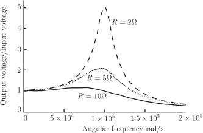

Long description: Fig1_6

Alt text: A graph showing the output voltage relative to the input voltage for an LC filter at different values of resistance (2 Ohm, 5 Ohm, and 10 Ohm) as a function of angular frequency.
This description was generated by AI and has not been verified by a human. If you spot an error, please use the feedback link below.
- The graph plots the ratio of output voltage to input voltage on the vertical axis, ranging from 0 to 5, against the angular frequency in radians per second on the horizontal axis, which ranges from 0 to \(2 \times 10^5\) radians per second.
- Three curves represent the frequency response for different resistances: \(R = 2\) Ohm (dashed line), \(R = 5\) Ohm (dotted line), and \(R = 10\) Ohm (solid line).
- At low angular frequencies (near 0 radians per second), all three curves show a ratio of approximately 1.
- The curve for \(R = 2\) Ohm exhibits a sharp peak, reaching a maximum ratio close to 5 when the angular frequency is approximately \(1 \times 10^5\) radians per second.
- The curve for \(R = 5\) Ohm shows a smaller peak, with a maximum ratio slightly above 2, occurring at an angular frequency around \(1 \times 10^5\) radians per second.
- The curve for \(R = 10\) Ohm remains relatively flat and low across the entire measured range of angular frequencies, staying close to a ratio of 1.
- As the angular frequency increases towards \(2 \times 10^5\) radians per second, all three curves approach a ratio of 0.